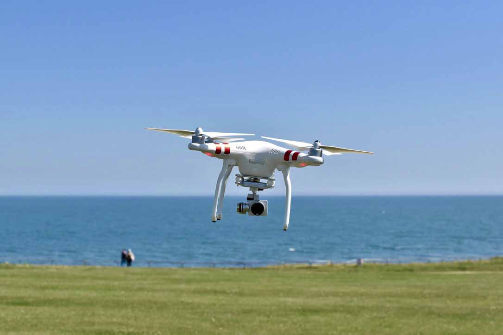

David Foley
David Foley
30/09/17
My Drone
Across much of photo/videography practitioners like to talk about equipment. Aerial photography is no different!
I fly the DJI Phantom 3 Standard. The choice of drones available to buy now is incredible and increasing all the time. There are multiple manufacturers that are credible and attractive. DJI is the largest of the consumer drone manufacturers, and perhaps not surprisingly, many people's route into aerial photography.
You can spend a lot (really, a lot!) of money on a drone. The DJI Phantom 3 Standard is a good entry point, for a few hundred pounds you can be up and flying with a stable platform and reasonable camera and able to access most of the functionality that will enable you to capture stunning aerial shots. In terms of practicality, reliability and value for money, its pretty hard to beat.
It's a standard quad: four propellers powered by four brushless motors. The camera shoots 2.7k video footage and 12MP stills. It uses the DJI Phantom 3 LiPo battery for power, which should be good for 15-20 mins of flight depending on conditions and at what reserve (I set my reminder to return home at 30%) you bring the drone home. The remote is comfortable to hold and has a capacious battery that easily lasts five or more flights. Its range is easily sufficient for flights within VLOS (visual line of sight). The DJI go app works seamlessly with the drone and gives you FPV as well as flight modes like course hold, follow me, point of interest and waypoints. The remote controls the gimbal as well as the drone so you can pan up and down remotely.
One day I will upgrade, but I will always have an affinity to the DJI phantom 3 - it's an amazingly capable drone at a very obtainable price.